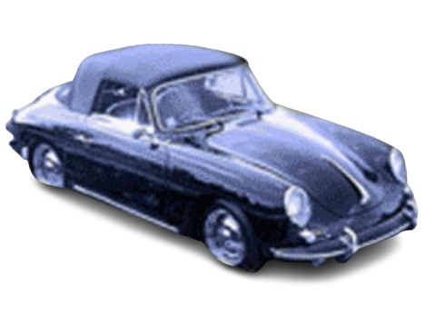

🤝
Ehrlichkeit
Wir empfehlen nur, was wirklich sinnvoll ist — auch wenn das mal „lass es lieber" heißt.
Aus einer Leidenschaft für alte Technik wurde ein kleines Familienunternehmen mit großem Lager und noch größerem Herz für Oldtimer.

Angefangen hat alles mit einem einzigen defekten Becker-Radio und der Frage: „Kriegt man das wieder hin?" Man kriegt. Aus diesem ersten Erfolgserlebnis ist über drei Jahrzehnte eine Adresse geworden, die Oldtimer-Freunde in ganz Europa kennen.
Heute beraten wir persönlich, restaurieren mit Geduld und versenden Raritäten, die anderswo längst vergessen sind — immer mit dem Anspruch, das Original zu bewahren.
Das erste Becker-Radio wird in der heimischen Werkstatt wiederbelebt.
Erstes festes Ersatzteillager — Blenden, Knöpfe und Skalen für viele Modelle.
Oldtimer-Radio.de geht online und erreicht Sammler weit über die Region hinaus.
Spezialisierung auf 6V→12V-Umrüstung und dezente UKW-Umbauten.
Über 4.000 restaurierte Radios und ein Lager voller Klassiker.
Wir empfehlen nur, was wirklich sinnvoll ist — auch wenn das mal „lass es lieber" heißt.
Sorgfalt statt Schnelligkeit. Jedes Radio bekommt die Zeit, die es braucht.
Drei Jahrzehnte Erfahrung mit Marken, Modellen und ihren Eigenheiten.
Wir machen das, weil wir Oldtimer lieben — das hört man jedem Radio an.
Ob Frage, Anfrage oder einfach ein Schwätzchen über alte Technik — wir freuen uns auf dich.
Kontakt aufnehmen